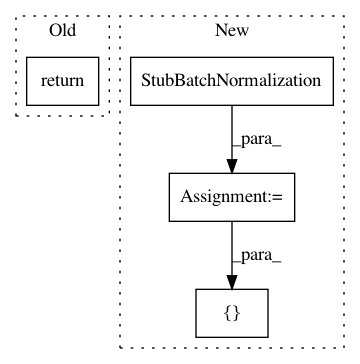

534a56bb2f790e17160586ed8a72b88d37de9c5a,autokeras/layer_transformer.py,,deeper_conv_block,#Any#Any#Any#,10
Before Change
np.ones(n_filters, dtype=np.float32)]
new_conv_layer.set_weights([bn_weights, conv_weights])
return new_conv_layer
def dense_to_deeper_block(dense_layer, weighted=True):
Get deeper layer for dense layer
After Change
weight[..., i] = filter_weight
bias = np.zeros(n_filters)
new_conv_layer = StubConv(n_filters, kernel_size=filter_shape, func=conv_layer.func)
bn = StubBatchNormalization()
if weighted:
new_conv_layer.set_weights((add_noise(weight, np.array([0, 1])), add_noise(bias, np.array([0, 1]))))
new_weights = [np.ones(n_filters, dtype=np.float32),
np.zeros(n_filters, dtype=np.float32),
np.zeros(n_filters, dtype=np.float32),
np.ones(n_filters, dtype=np.float32)]
bn.set_weights(new_weights)
return [bn,
StubActivation("relu"),
new_conv_layer,
StubDropout(constant.CONV_DROPOUT_RATE)]
def dense_to_deeper_block(dense_layer, weighted=True):
Get deeper layer for dense layer
In pattern: SUPERPATTERN
Frequency: 3
Non-data size: 4
Instances
Project Name: keras-team/autokeras
Commit Name: 534a56bb2f790e17160586ed8a72b88d37de9c5a
Time: 2018-05-21
Author: jin@tamu.edu
File Name: autokeras/layer_transformer.py
Class Name:
Method Name: deeper_conv_block
Project Name: keras-team/autokeras
Commit Name: 7f30b2403fadc4eaad48ceaf6154a626f477f8c8
Time: 2018-05-26
Author: jin@tamu.edu
File Name: autokeras/generator.py
Class Name: DefaultClassifierGenerator
Method Name: generate
Project Name: keras-team/autokeras
Commit Name: 4b83c1070cebd0d996ba2cc69779dcb66d5d0032
Time: 2018-05-29
Author: jhfjhfj1@gmail.com
File Name: autokeras/generator.py
Class Name: DefaultClassifierGenerator
Method Name: generate